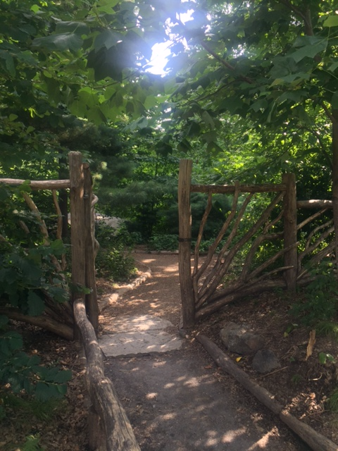
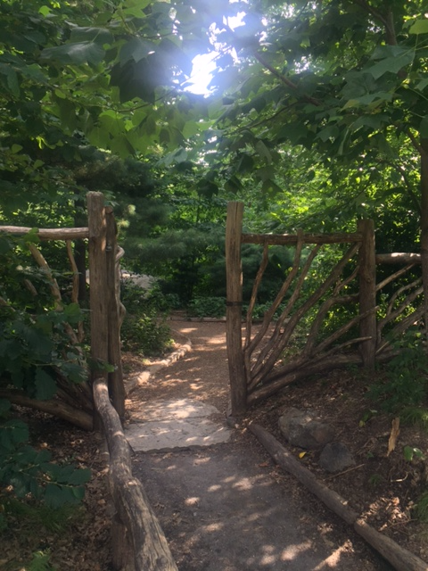

Well-traveled New Yorkers have been all over the world: Paris, Milan, Havana, the Highline ... The Highline?!!! Where is this Highline you speak of?! Right here in New York City in your own backyard. Why not become a "Hometown Tourist" and discover some of New York's hidden treasures, starting with the borough of Manhattan.